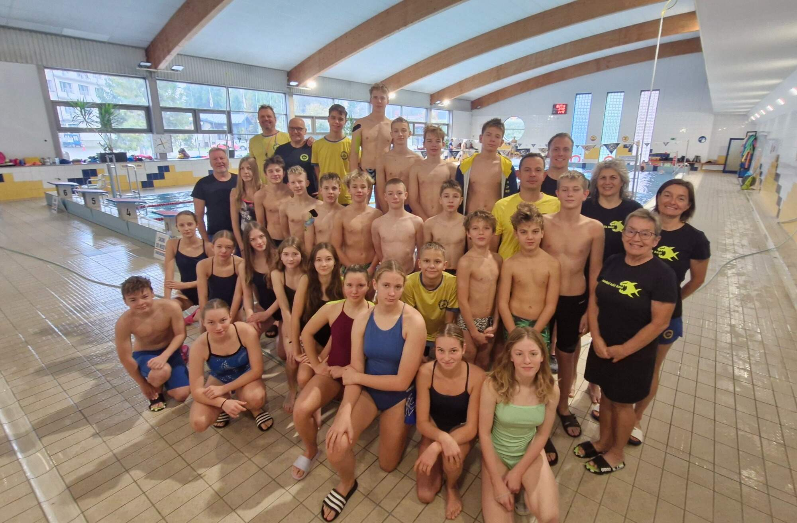

Seznam přijatých do Klubového plavání 2026/27
Abecední seznam dětí přijatých do Klubového plavání na sezónu 2026/27.
Upřesňujeme, že jde o skupinu zdokonalovacího a výkonnostního plavání, která plave na 50m bazénu. Hlavním trenérem je Jiří Šup.
Do Přípravky na dětském bazénku a 25m bazénu se můžete přihlašovat celý rok bez omezení.
Prosíme o platbu členského příspěvku do začátku sezóny. Začínáme v pondělí 7. 9. 2026.
Číslo účtu 4449157540/5500 (Raiffeisenbank)
Variabilní symbol: rodné číslo dítěte
Specifický symbol: 122
Pololetí 3 700 Kč · celá sezóna 7 200 Kč
Jmenný seznam dětí zveřejní klub. V prototypu ho kvůli ochraně osobních údajů neuvádíme.
Další aktuality
Krajský přebor 10 a 11letého žactva, Šumperk
O víkendu 14. a 15. 11. 2026 se naši plavci ročníků 2016 a 2015 zúčastnili krajského přeboru OLK a ZLK. Za klub startovalo 23 mladších žáků a žaček.

Soustředění sportovních tříd v polském Szczyrku
Fotky ze soustředění najdete v galerii na Rajčeti.
Fotogalerie na Rajčeti
Zlínské plavecké naděje zářily v Prostějově
Na Trojutkání klubů PoPro, UnOl a Zlín jsme vyslali 69 závodníků. Domů vezou smršť osobních rekordů.